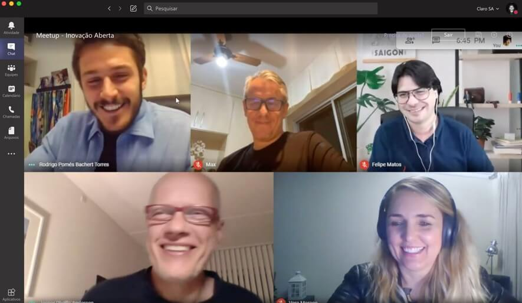
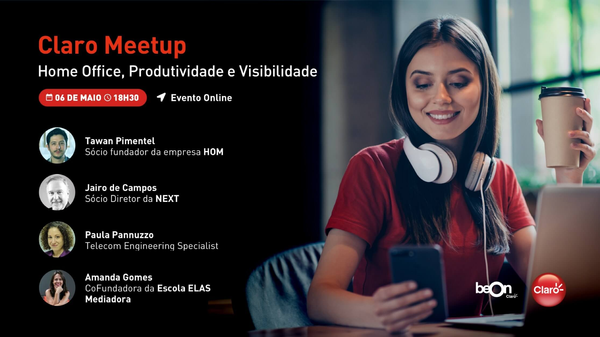

Claro Meetup
Claro Meetup - Economias Colaborativa, Circular e Criativa: impactos na sociedade e nas empresas
28 Out 2020
E aí galera, prontos para o próximo Claro Meetup?
O tema será “Quais são as novas economias (colaborativa, circular e criativa) e como elas podem impactar a sociedade e as empresas”. A ideia é bater um papo sobre os novos modelos econômicos, qual é a aceitação da sociedade à mudança, novos meios de consumo no Brasil e no mundo, etc. O evento será online, no dia 29/10, das 18h30 às 20h. Se inscreva e acompanhe com a gente. \o/
Lucas Foster - Mediador
CEO do LabCriativo e Idealizador do World Creativity Day e do Prêmio Brasil Criativo.
Prof. José Carlos Lazaro
PhD em Planejamento Ambiental pela TU Berlin, profº. associado e pesquisador na UFC.
Nathália Raggi
Socióloga, mestra em Educação pela UNICAMP e Gerente de Comunidade do Elo7.
Lala Deheinzelin
Futurista, especialista em Novas Economias, criadora da Fluxonomia 4D e do movimento Crie Futuros.
Clique no link abaixo e participe!
Claro Meetup: EdTech – Inovação e Tecnologia para Educação em tempos de distanciamento
23 Set 2020
O contexto atual nos apresenta inúmeros desafios para os indivíduos e a sociedade como um todo e a educação é uma das áreas mais impactadas.
Da noite para o dia, pais passaram a fazer o papel de educadores, professores precisaram se adaptar para ter o engajamento dos alunos numa realidade online e estes também precisaram mudar comportamentos e hábitos para se adaptar a este momento. Para discutir sobre os desafios da Educação no contexto da pandemia, as perspectivas em relação ao futuro e debater o papel da tecnologia nesse contexto, convidamos você para participar do nosso Claro Meetup. Contamos com sua presença!
Marco Fisbhen
Idealizador e CEO do Descomplica
Roberto dos Reis
Diretor Executivo da Global Federation of Competitiveness Councils
Roseli de Deus
Professora livre-docente do Departamento de Engenharia de Sistemas Eletrônicos da USP
Mediadora: Renata Pomés
Professora e Mestre em Linguística Aplicada e Estudos da Linguagem
Quer saber como foi essa edição do Claro Meetup? Clique no link abaixo para assistir na integra:
Claro Meetup - IoT - Casa, Campo e Cidade: Expectativas x Realidades.
20 Ago 2020
As inovações tecnológicas vem transformando a forma como as pessoas se relacionam com objetos no cotidiano, as relações de trabalho e entre os indivíduos.
Surge, então, um novo conceito de utilização da internet: a Internet das Coisas, que interconecta objetos físicos à rede virtual.
E é para discutir sobre os efeitos da Internet das Coisas no mercado, convidamos você para participar do nosso próximo Claro Meetup: Internet das Coisas - na casa, no campo e na cidade: expectativas e realidade.
Marcia Ogawa Matsubayashi
Sócia Líder da Indústria de Tecnologia, Mídia e Telecom da Deloitte Brasil
Guilherme Spina
CEO V2COM - WEG Group
José Ricardo Tobias
Head de casa inteligente na Positivo
André Torre Neto
Pesquisador Sênior na Embrapa
Quer saber como foi essa edição do Claro Meetup? Clique no link abaixo para assistir na integra:
Claro Meetup - Gestão da Inovação: como as empresas se estruturam para inovar
22 Jul 2020
Como as empresas se estruturam para inovar? Esta foi a grande questão que norteou a discussão da 5ª edição do Claro Meetup, realizada na noite do dia 22 de julho de 2020.
O termo Inovação Aberta ou Open Innovation surgiu pela primeira vez em 2003 no livro Open Innovation: The New Imperative for Creating And Profiting from Technology de Henry Chesbrough. Para ele, inovação aberta é um meio para que indústrias e organizações possam promover ideias, pensamentos, processos e pesquisas abertas, a fim de melhorar o desenvolvimento de seus produtos, prover melhores serviços para seus clientes, aumentar a eficiência e reforçar o valor Ainda segundo o autor, é um paradigma que assume que as organizações podem e devem usar ideias internas e externas, assim como caminhos internos e externos para o mercado.
Após esta breve contextualização do tema, vamos destacar as principais discussões que tivemos no nosso encontro. O meetup foi mediado por Maximiliano Carlomagno, que é executivo, professor e autor do livro Gestão da Inovação na Prática, além de artigos publicados internacionalmente nesta temática. Carlomagno destacou que teve o privilégio de aprender sobre Open Innovation com o criador do termo, Chesbrough e iniciou a discussão introdução destacando que Inovação Aberta não é sinônimo de conexão com startups, e sim que isto é uma das inúmeras formas de promovê-la numa organização. Em seguida, questionou os painelistas sobre suas opiniões em relação ao tema.
Felipe Matos, fundador da aceleradora Startup Farm, COO do programa governamental Start-Up Brasil e co-fundador do venture builder Instituto Inovação, destacou a importância do relacionamento entre empresas e startups, ressaltando que muitas vezes as exigências das empresas se tornam conflitos para a cocriação de novos negócios com startups. Como exemplo, Matos mostrou que muitas startups, por mais sustentáveis que sejam, muitas vezes não conseguem ser cadastrada nas empresas pelas exigências das áreas de compras e/ou quando conseguem, precisam a submeter a processos de pagamentos de podem quebrar seu fluxo de caixa. Por isso, é importante que a mudança de mindset dentro das organizações promovam as adaptações necessárias nos processos para receber as startups. Além disso, Matos também destacou que a importância de se realizar Provas de Conceito remuneradas, pois esta é uma forma da empresa valorizar e mostrar interesse genuíno na startup desde o início do relacionamento.
Em seguida, a painelista Vera Moraes, head de inovação da agência de inovação Inventtando mostrou como muitas corporações criam áreas de inovação e acabam desviando o propósito destas áreas por meio de processos e rotinas arcaicas que ainda vigoram nessas empresas. Citou como exemplo os conflitos em relação ao executivo de terno e gravata ao encontrar o empreendedor utilizando roupas mais casuais. Neste momento, o mediador pontuou que o ambiente descontraído não é necessariamente o que causa a inovação. Em sua fala, Vera também ressaltou a importância da diversidade para potencializar a inovação nas organizações, mostrando que diferentes formas de pensar com pessoas diversas é fundamental para catalisar a transformação de negócios.
Jesper Rhode, facilitador integrante da equipe da Hyper Island e associado da Copenhagen Institute for Future Studies, mostrou que a inovação surge da necessidade. “O cara que inventou a mala com rodas não trabalhava com mala nem com rodas, ele era um comandante de avião.”, disse Rhode. Além disso, destacou a importância de se estimular a criatividade e o teste de hipóteses dentro das organizações, sejam em iniciativas incrementais ou disruptivas de inovação. O painelista citou a conhecida frase de Linus Pauling – A melhor maneira de ter uma boa ideia é ter muitas ideias – ressaltando a necessidade de se buscar novas formas de iniciativas que atendam as necessidades das empresas para geração e desenvolvimento de negócios.
Ao final do evento, os painelistas esclareceram as dúvidas da plateia online e o comitê organizador do Claro Meetup convidou a todos para o próximo evento que será realizado em agosto com o tema: Internet das Coisas: em Casa, no Campo e na Cidade: Expectativas x Realidade.
Claro Meetup - Novos Comportamentos de Consumo e Comportamento
17 Jun 2020
No mês de junho foi realizada a 4ª edição do Claro Meetup, que promoveu uma excelente discussão sobre o tema “Novos padrões de Consumo: qual será o novo normal?” com grandes referências do mercado.
Os painelistas convidados aprofundaram como atual contexto sanitário, econômico e social está afetando as relações de trabalho, os comportamentos de consumos e os impactos nos negócios.
Fernanda Ribeiro - co-fundadora da startup Conta Black, destacou a importância de reconhecer as novas oportunidades que surgem na crise, sobretudo em nichos de mercado. Ressaltou ainda que a valorização da diversidade nas organizações é fundamental para inovar e transformar as organizações.
O especialista em Inovação e Futurista Demétrio Teodorov, mostrou como um cenário de caos e incerto é capaz de potencializar a criatividade e identificação de novas oportunidades e soluções para as novas demandas do mercado, salientando a importância de se observar o que é inédito e as novas tendências comportamentais.
Já Herman Besler, estrategista, consultor e empreendedor em sério, destacou os desafios de empreender neste cenário e a importância das conexões entre organizações para inovarem. O painelista também analisou as mudanças nos padrões de consumo provocados pela pandemia.
Prata da casa, o Diretor de Inteligência Mercadológica da Claro, André Gruerreiro, analisou os impactos deste contexto no consumo dos produtos de telecomunicações, ressaltando a importância da análise crítica dos dados gerados pelos consumidores e o uso de novas tecnologias e Inteligência Artificial para reagir mais rapidamente às mudanças causadas.
Facilitando toda a discussão, Marcela Queiroga – Diretora da Rede Mulher Empreendedora – levou ao debate a necessidade de entender que as mulheres estão exercendo seus múltiplos papéis sociais de forma simultânea e, além disso, muitas deles estão criando negócios de alto impacto social e econômico.
Claro Meetup - Home Office, Produtividade e Visibilidade
06 Maio 2020
Existe um ditado popular que diz “Quem não é visto, não é lembrado”. Você acredita nisso?
Muitas empresas não tinham programas de trabalho remoto e de uma hora para outra precisaram se adaptar. Por isso, para muitos colaboradores e gestores ainda é incerto como tudo isso irá impactar na carreira ou nas entregas.
A ideia desse Meetup é falar sobre Home Office, Produtividade e Visibilidade na empresa. Queremos discutir os pontos positivos e negativos de tudo isso e poder responder algumas questões: “Como mostrar para o meu gestor que eu estou trabalhando e entregando?” Ou “Como demonstrar que estou próximo da minha equipe, mesmo de longe?”.
Se você está nesse momento, colaborador ou líder, participe com a gente.
Tawan: Sócio Fundador - HOM
Sócio fundador da empresa HOM - Home Office Management, empresa pioneira em ajudar organizações a implementarem o modelo de trabalho remoto. Desde 2012, se dedica a criar soluções para o trabalho à distância e a difundir o modelo para pessoas e empresas. É o responsável pela criação do primeiro software exclusivo para o gerenciamento de colaboradores remotos e da primeira metodologia com recursos de consultoria, pesquisas e treinamentos para agilizar a implantação do trabalho remoto de forma estruturada. Já ajudou grandes empresas e seus milhares de colaboradores a trabalharem melhor no novo modelo.
Paula Pannuzzo: Telecom Engineering Specialist
Estudou Engenharia de Sistema e Informática na Universidade do Minho, Portugal. Passou por várias empresas como a Cisco, IBM e Siemens trabalhando como Engenheira de Redes em Portugal, até aparecer uma oportunidade de trabalho que a levou à Jamaica onde ficou durante 11 anos em uma empresa de telecomunicações. Atualmente em São Paulo, trabalhando com empresas de telecomunicações da América Latina como Telecom Engineering Specialist.
Jairo Campos: Sócio Diretor – NEXT
Sócio-diretor responsável pela área de desenvolvimento e carreira da empresa, gestão de programas de outplacement, orientação de carreira, recolocação profissional, assessment e coaching. Experiencia de 36 anos em RH, com gestão e desenvolvimento de pessoas em organizações no Brasil e na América Latina.
Mediadora: Amanda Gomes - CoFundadora – Escola ELAS
Formada em Administração de Empresas e pós-graduada em Gestão de Varejo pela Fia USP – MBA Executivo pela Fundação Dom Cabral, Amanda tem mais de 20 de experiência no mundo corporativo exercendo funções de alta liderança em grandes empresas. CoFundadora da Escola ELAS, primeira escola de liderança feminina do Brasil.
Entretenimento para todos: Conectando o online e offline
29 Jan 2020
Está chegando mais um Claro Meetup!
O mercado global de mídia e entretenimento apontou que a receita global deve alcançar US$ 2,6 trilhões em 2023, acima dos US$ 2,1 trilhões registrados em 2018.
A pesquisa analisa como as mudanças nos gastos do setor estão moldando o futuro da indústria. segundo estudo da PwC*. E o consumidor, cada vez mais exigente, quer exercer maior controle sobre como e quando experimenta as diversas mídias.
Pensando nisso, convidamos pessoas de diferentes segmentos para um bate-papo descomplicado sobre o tema:
Alessandro Maluf:
Sócia e fundadora do Bora.aí, mãe do Ben, do Nir e da Ava. Relações Públicas (PUC-RS) e Administradora de Empresas (FGV-SP), especialista em Marketing Direto e Jornalismo Digital. Adora praticar esportes e fazer passeios ao ar livre com as crianças.
Fabio Hurtado:
Fundador, editor e produtor de conteúdo do Nerd Break, possui vasta experiência nas áreas do entretenimento como: produção de evento, criação de roteiro, criação e gerenciamento de conteúdo online, marketing digital e redes sociais.
Julio Cesar Soares:
Com quase duas décadas em experiência em comunicação, atuou por 15 anos na Odebrecht, nas áreas de assessoria de imprensa, comunicação digital e produção de conteúdo audiovisual. Atualmente é creator no InStudio, área dedicada ao audiovisual da InPress Porter Novelli.
Marina Belei:
Jornalista, é especialista em comunicação e será a mediadora do nosso bate-papo.
Claro Meetup: Games, os bastidores do GGWP
10 Dez 2019
O mercado de games no Brasil faturou 1,5 bilhão de dólares em 2018, mantendo a posição de liderança na América Latina, e deve crescer em torno de 5,3% até 2022.
GGWP=good game, well played. Expressão muito comum em games quando alguém faz uma grande jogada. A ideia do painel será contar um pouco a perspectiva e cases de quem vive o jogo no dia a dia, contando tudo o que acontece por trás do esporte, que o publico não vê.
Para conhecer ainda mais este mercado, traremos grandes referências em games no Brasil para discutir as oportunidades e desafios deste mercado.
Ana Francisco - Head de Digital Services na Ericsson
Ana é trendhunter e especialista em Inovação pela TIP. Engenheira com mais de 15 anos de experiência em tecnologia aplicada à business trends da Indústria Telco, atua na criação e desenvolvimento de novas oportunidades de produtos e serviços para uma sociedade cada vez mais conectada e sustentável.
É formada em estatística pela UNESP Presidente Prudente, mestre em estatística na ESALQ/USP. Já trabalhou em empresas como SAS, Oracle, Abril e Kantar. Atualmente é Jedi em Analytics na ASN.Rocks (www.asn.rocks), professora na FGV e SAS. Atualmente está como Presidente do Conselho regional de estatística, da região de São Paulo (Conre-3)!
Leo De Biase - Sócio e fundador da BBL
Sócio e fundador da BBL, holding brasileira de esportes eletrônicos, ao lado de Nando Cohen, referência no mercado publicitário brasileiro. Possui 21 anos de experiência nas áreas de games, e-sports e tecnologia; atualmente, também é o CEO da ESL Brasil. Chegou à empresa, maior do mundo no ramo de e-sports, em novembro de 2016 com a missão de fortalecer o mercado nacional da área, consolidando parcerias estratégicas e buscando investimento para iniciativas, eventos e campeonatos, já bastante famosos e lucrativos ao redor do mundo. O executivo veio de uma passagem de mais de quatro anos pela NVIDIA, onde foi responsável pelas áreas de Consumer Marketing e Relações Públicas para a América Latina. Antes disso, De Biase também passou por outras grandes empresas do setor, dentre elas Bigpoint e Level Up! Games. Atuando no segmento desde 1998, foi pioneiro no segmento das “Lan Houses” no Brasil e, como ex-jogador de CS 1.6 e entusiasta dos e-sports, tornou-se referência no mercado para consultas, palestras e narrações.
Alessandra Dutra - Psicóloga da RED Canids Kalunga
Psicóloga há 26 anos dedicados a alta performance especializada em Psicologia do Esporte, mestre em Psicologia Social, formação em Coaching pela International coaching community, preparadora mental do comitê olímpico brasileiro. Psicóloga da organização de esports RED Canids Kalunga, pioneira nos estudos da Psicologia Combativa no Brasil.
Felippe Corradini - Fundador da feira de games BRMA e CEO da RED Canids Kalunga
Formado em Administração pela FAAP, empresário no mercado de games há mais de 5 anos, sendo pioneiro no país em trazer as tendências mundiais dos esports. Fundador da feira de games BRMA e atual CEO da RED Canids Kalunga, time com sete modalidades de esports e mais de 53 atletas sob sua responsabilidade, que conquistaram diversos títulos brasileiros e representaram o Brasil mundo a fora.
MEDIADOR: Guilherme Maluf - Gerente de marketing da Claro
Gerente de marketing formado em administração pela FGV e MBA em Georgetown trabalhou na NBA em Nova Iorque antes de voltar ao Brasil e se juntar à Claro como gerente de marketing. Líder de produtos inovadores como SmartHome, wifi público e Gaming, busca facilitar o acesso a novas experiências para os consumidores e comunidades.
Primeiro Claro Meetup: O Futuro da inteligência Artificial
12 Nov 2019
O futuro da Inteligência Artificial é o tema do 1º Meetup da Claro
A Claro convida você para discutir como a Inteligência Artificial está presente no dia-a-dia das pessoas e dos negócios, tendências e as principais questões atuais relacionadas ao tema, como o impacto da IA nas experiências dos indivíduos, aplicações e futuro da tecnologia.
Para este painel, traremos grandes referências no assunto:
Fábio Gandour - Ex-Cientista Chefe da IBM
É formada em estatística pela UNESP Presidente Prudente, mestre em estatística na ESALQ/USP. Já trabalhou em empresas como SAS, Oracle, Abril e Kantar. Atualmente é Jedi em Analytics na ASN.Rocks (www.asn.rocks), professora na FGV e SAS. Atualmente está como Presidente do Conselho regional de estatística, da região de São Paulo (Conre-3)!
Adolfo Abreu - Customer Engineer do Google Cloud Brasil
É gerente do time de Customer Engineer do Google Cloud Brasil. Tem mais de 20 anos de experiência em tecnologia da informação trabalhando na maior parte do tempo com infraestrutura, banco de dados, sistemas analíticos e machine learning. Trabalhou em empresas como Oracle, EMC e AWS. É formado em ciência da computação com MBA em administração de empresas.
Mediador: Rodrigo Duclos - Chef Digital Officer (CDO) da Claro
Quer saber como foi essa edição do Claro Meetup?
Acesse o blog Mundo Mais Tech e saiba tudo o que rolou.